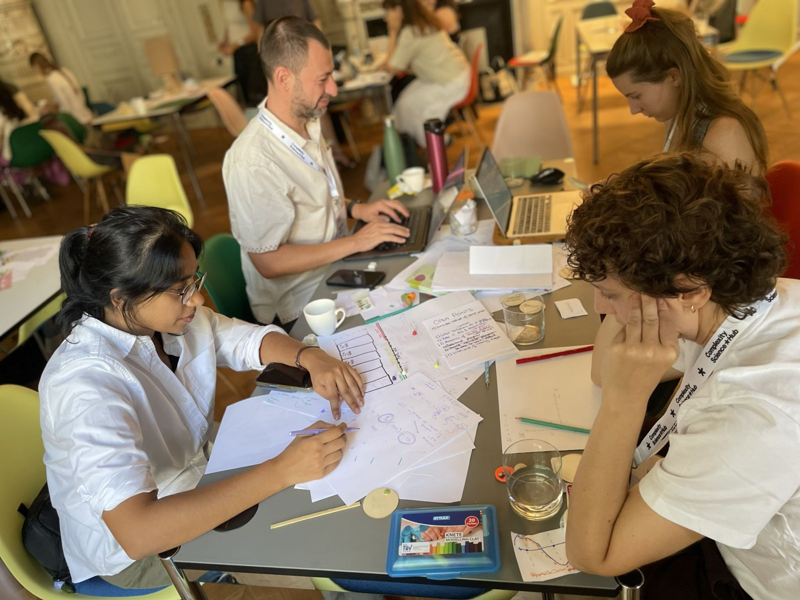
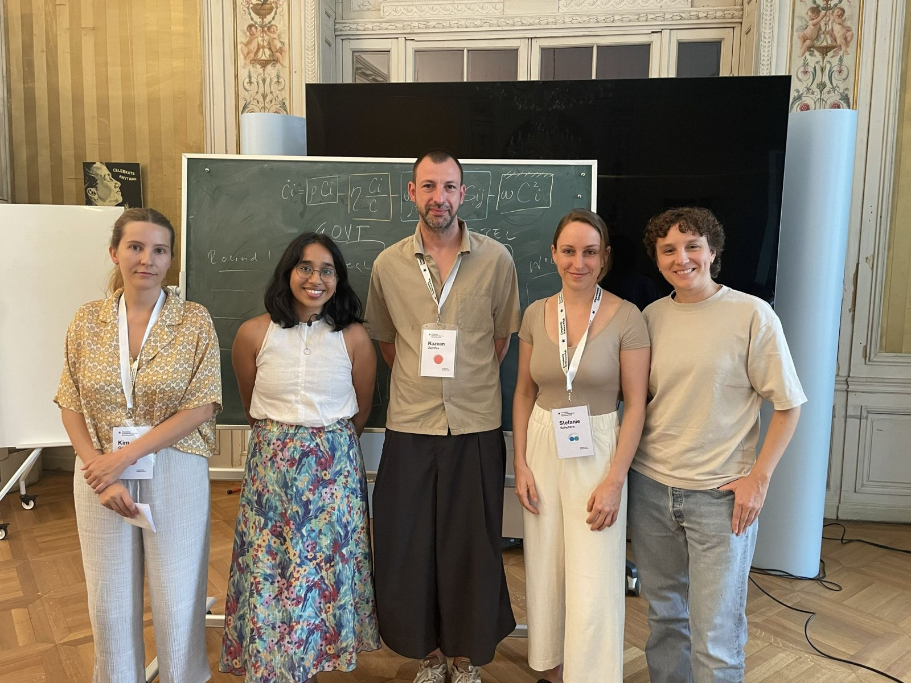
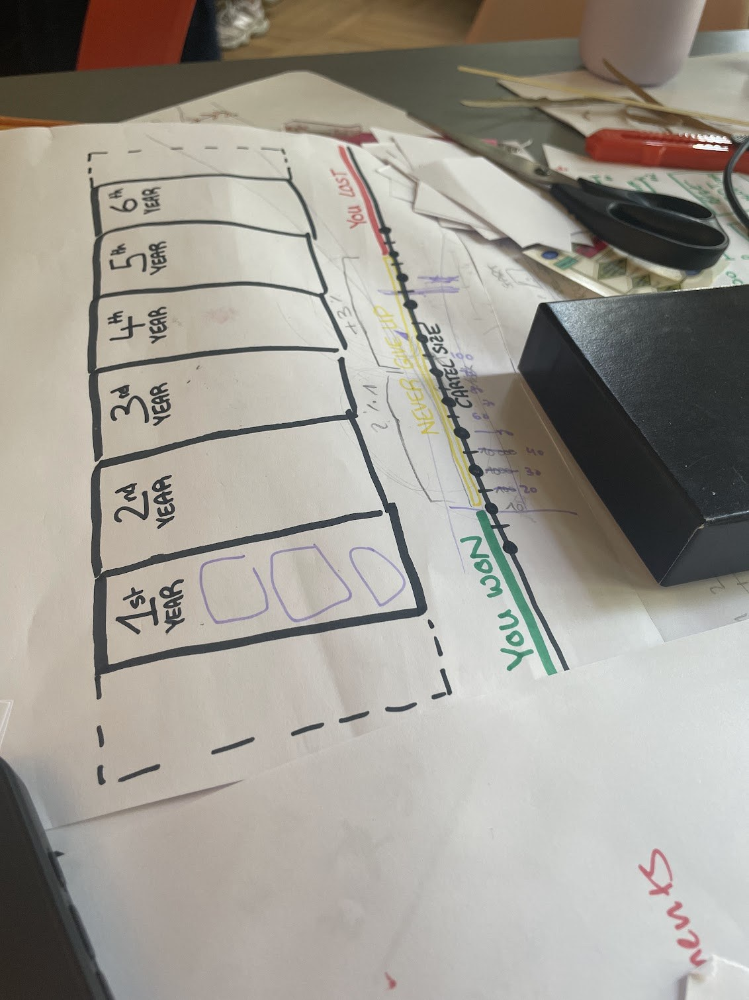
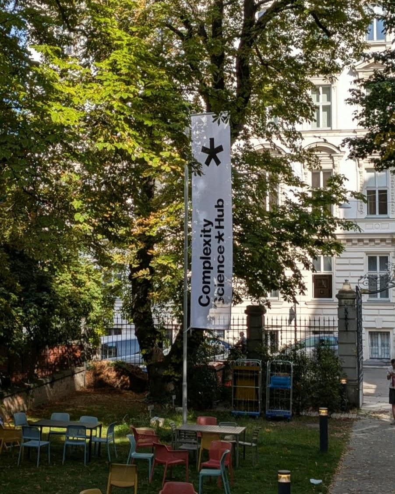

Visualizing Complexity Workshop
I took part in the Visualizing Complexity Science Workshop at the Complexity Science Hub in Vienna. Over five days, we heard from guest speakers and worked in teams to find ways to visualize research presented by two CSH scientists, Rafael Prieto-Curiel and Katharina Ledebur.
I really enjoyed working with researchers, mathematicians, and designers from different parts of the world. We were fortunate to have guidance from game designer Cary Staples as we turned Prieto-Curiel’s research on cartel recruitment in Mexico into a board game called Seis Años.




